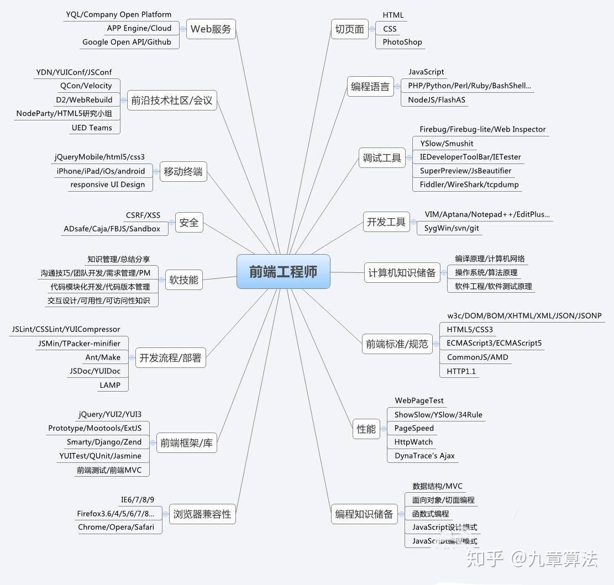

2019夏Web前端小学期第一弹
发布于2019年7月2日
Web前端课可能是到目前为止的专业课中最靠近工业界的一门，应用性较强，入门门槛似乎也不高（比如刚上一节课就可以写一个辣鸡博客），正因此，在搜索引擎中搜索“Web前端”时会出现大篇幅的培训班的广告，这是在搜索“计算机组成原理”或者“编译原理”等课程时所不会出现的。但是门槛不高并不意味着成为一名优秀的前端工程师很容易，下面是一张网络上流传的图。

看来一名前端工程师的技能树还是很庞大的。此外，由于前端是设计人机交互的界面，所以还需要考虑到用户的使用体验，甚至还需要考虑到残障人士的使用特点。可见前端是一门很大的学问，不是说掌握了html、css、javascript就可以横行天下了。